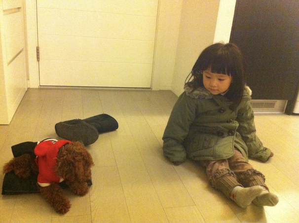

Alicia moved to Beijing by this point, where she'd started kindergarten and enjoyed a quiet life.
"It wasn’t close to the city center anymore, but it was very peaceful. Life felt simple and relaxed there..."
—Alicia
She remembers being much more outgoing compared to today, and did things an outgoing kid would do.
"I did small performances and even went on some kids’ TV programs, which feels impossible to imagine now"
—Alicia
She notes that she didn't have pets growing up due to a family member's allergies. She'd alleviate this longing by playing with her cousin's dog everyday.
Alicia in her childhood home in Beijing, seen sitting next to a brown plush dog.